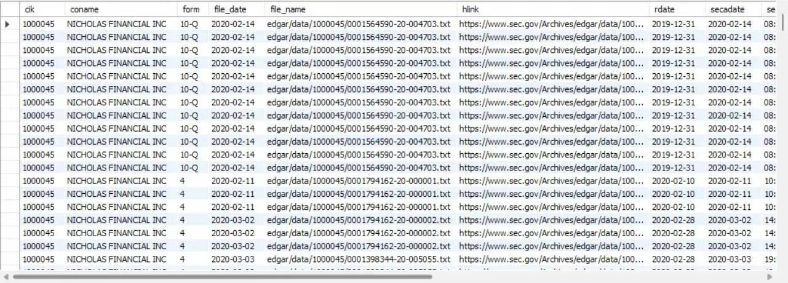

SEC-Index
This is a demonstration of data scraped from the SEC-Index Project. The aim is to create an SEC index database that enhances researchers' ability to utilize SEC files efficiently and quickly, while also allowing a high level of customization based on individual needs. Please note that all these data are derived from a primary algorithm, which may not be optimal.
If you are not familiar with Github, simply click the download button to view the demo

Project Details / Background
The "Non-GAAP" project is a comprehensive initiative that focuses on non-GAAP (Generally Accepted Accounting Principles) financial measures. The project leverages Python for data extraction, processing, and analysis. The main objective is to extract and analyze the adjusted EBITDA used in company filings.
The project starts with the extraction of financial data from various sources using Python's powerful libraries. The extracted data is then processed and structured into a usable format for further analysis.
The processed data is then used to identify and extract the adjusted EBITDA used in company filings. The analysis is designed to be easily understandable, allowing users to quickly grasp the differences and similarities between non-GAAP and GAAP measures.
The results of the analysis are then written to an Excel file named 'demo.xlsx'. This file contains the detailed extraction of adjusted EBITDA, including the corresponding year, amount, and account associated with each adjusted EBITDA. This allows users to easily access the results and use them for their own financial analysis or research.
In summary, the "Non-GAAP" project is a robust tool that demystifies non-GAAP financial measures. It combines efficient data processing with detailed financial analysis, and provides an informative Excel output, resulting in a tool that is both informative and easy to use.